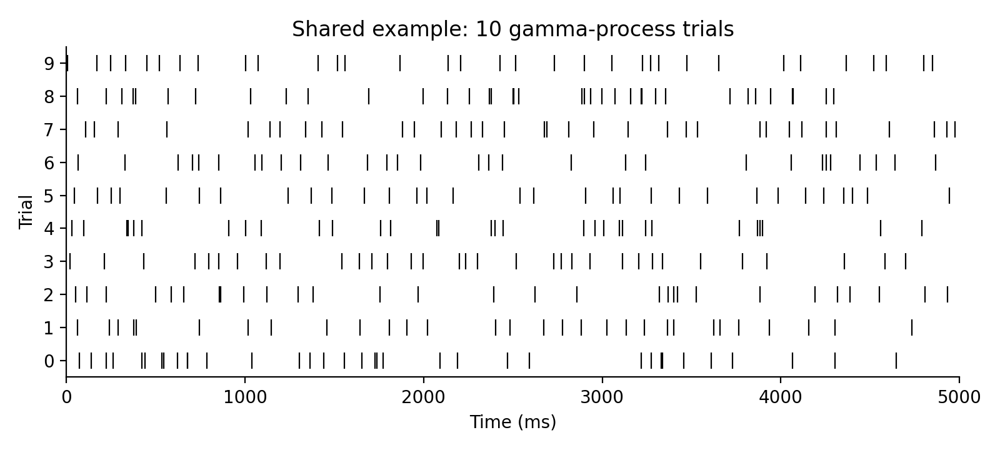
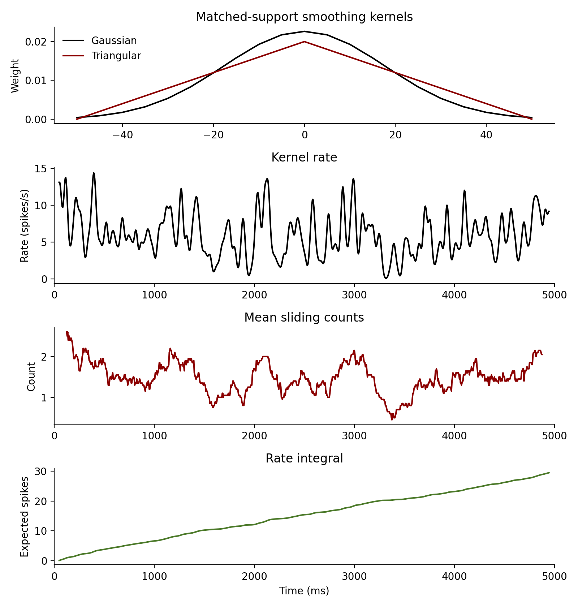
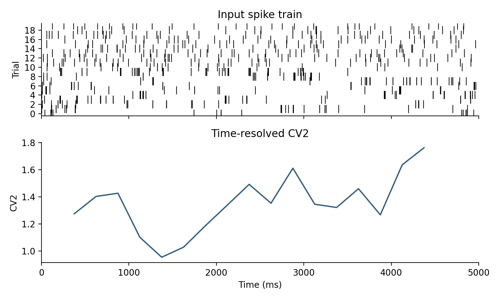
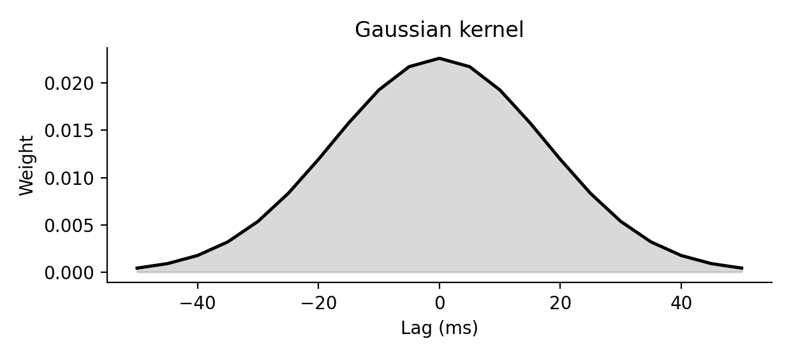
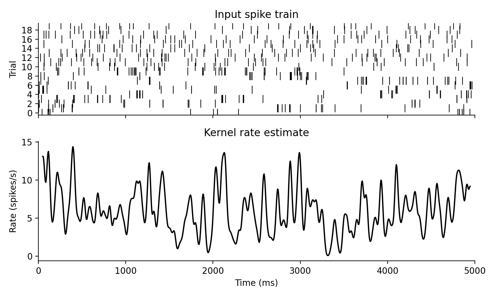
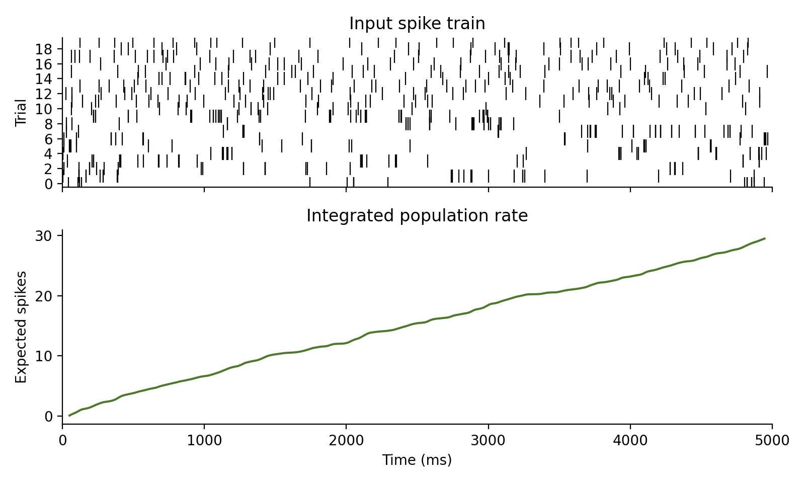
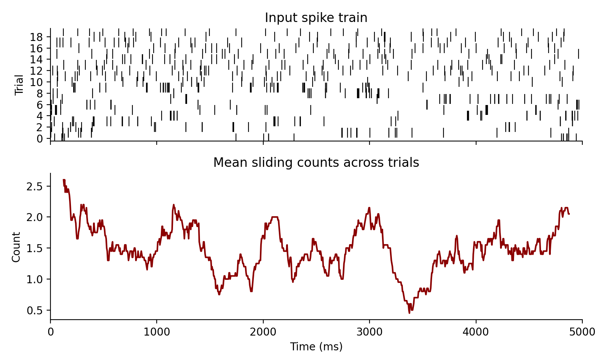
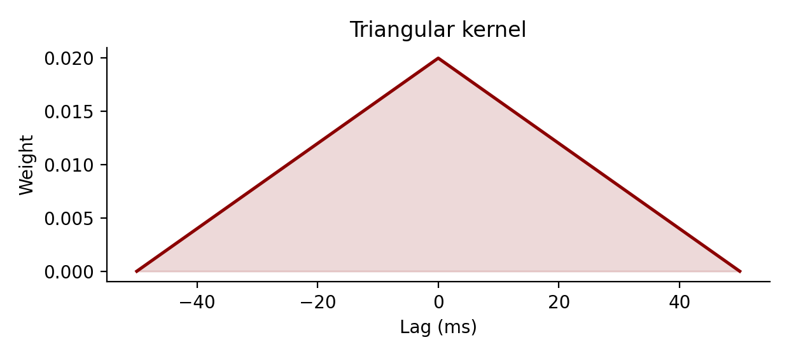

spiketools
Utilities for converting, analyzing, and transforming spike trains.
The package uses one canonical spike-train representation throughout:
spiketimes.shape == (2, n_spikes)
spiketimes[0] contains spike times in milliseconds.
spiketimes[1] contains integer trial or unit indices.
The representation is intentionally simple so it can bridge different simulation backends, as long as the source data already represents spike events rather than persistent activity states:
- NEST events:
np.vstack([events["times"], events["senders"] - sender_offset]) - Binned spike-count matrices:
binary_to_spiketimes(spike_count_matrix, time_axis_ms) - BinaryNetwork diff logs in this repository:
BinaryNetwork.extract_spike_events_from_diff_logs(...) - Trial-wise Python lists:
spiketimes_to_list(spiketimes)
Empty trials are preserved with placeholder columns [nan, trial_id]. This
allows downstream trial-wise statistics to keep the original population size
even when some trials or neurons do not spike.
Persistent binary network states are a different datatype. A state matrix keeps
neurons at 1 until they switch off again, whereas spiketimes encodes only
event onsets. Converting state matrices to spike trains therefore requires an
explicit onset extraction step and is not what binary_to_spiketimes(...)
does.
Shared Example Dataset
The examples below reuse one synthetic spike-train dataset: 20 trials, each
5 seconds long. Trials 0-9 share the same rate and a bursty gamma order
0.2 for controlled Fano-factor examples, while trials 10-19 use rates near
6 spikes/s and more regular orders for the interval-variability examples.
import numpy as np
from spiketools import gamma_spikes
np.random.seed(0)
rates = np.array([6.0] * 10 + [5.6, 6.3, 5.9, 6.5, 5.8, 6.1, 5.7, 6.4, 6.0, 5.5], dtype=float)
orders = np.array([0.2] * 10 + [1.0, 2.0, 2.0, 3.0, 1.0, 2.0, 3.0, 2.0, 1.0, 3.0], dtype=float)
spiketimes = gamma_spikes(rates=rates, order=orders, tlim=[0.0, 5000.0], dt=1.0)

Cookbook
Convert the shared example to a binned raster and a per-trial list:
import numpy as np
from spiketools import spiketimes_to_binary, spiketimes_to_list
binary, time = spiketimes_to_binary(spiketimes, tlim=[0.0, 5000.0], dt=50.0)
trials = spiketimes_to_list(spiketimes)
Estimate smoothed rates from the same spike trains:
from spiketools import gaussian_kernel, kernel_rate, rate_integral, sliding_counts, triangular_kernel
gauss = gaussian_kernel(25.0, dt=5.0, nstd=2.0)
# Match the Gaussian cutoff at +/- 50 ms on the dt = 5 ms grid.
tri = triangular_kernel((25.0 * 2.0) / (np.sqrt(6.0) * 5.0), dt=5.0)
rates, rate_time = kernel_rate(
spiketimes,
gauss,
tlim=[0.0, 5000.0],
dt=5.0,
pool=True,
)
counts, count_time = sliding_counts(spiketimes, window=250.0, dt=5.0, tlim=[0.0, 5000.0])
integrated = rate_integral(rates[0], dt=5.0)

Compute trial-wise variability metrics:
from spiketools.variability import cv2, cv_two, ff
trial_id = 13
trial = spiketimes[:, spiketimes[1] == trial_id].copy()
trial[1] = 0
ff_trials = spiketimes[:, spiketimes[1] < 10].copy()
print(f"Trial {trial_id} uses gamma order {orders[trial_id]}; expect cv2 < 1.")
print(round(float(cv2(trial)), 3))
print(round(float(cv_two(trial, min_vals=2)), 3))
print("Trials 0-9 use rate 6 spikes/s and gamma order 0.2; expect ff > 1.")
print(round(float(ff(ff_trials, tlim=[0.0, 5000.0])), 3))
Example output:
Trial 13 uses gamma order 3.0; expect cv2 < 1.
0.292
0.536
Trials 0-9 use rate 6 spikes/s and gamma order 0.2; expect ff > 1.
2.891
Run a sliding-window analysis on the same dataset:
from spiketools import time_resolved
from spiketools.variability import cv2
values, window_time = time_resolved(
spiketimes,
window=1000.0,
func=cv2,
kwargs={"pool": True},
tlim=[0.0, 5000.0],
tstep=250.0,
)
print(np.round(values[:5], 3))
print(np.round(window_time[:5], 1))
Example output:
[1.276 1.404 1.427 1.102 0.955]
[ 375. 625. 875. 1125. 1375.]

Regenerating docs:
python scripts/generate_api_docs.py
1"""Utilities for converting, analyzing, and transforming spike trains. 2 3The package uses one canonical spike-train representation throughout: 4 5`spiketimes.shape == (2, n_spikes)` 6 `spiketimes[0]` contains spike times in milliseconds. 7 `spiketimes[1]` contains integer trial or unit indices. 8 9The representation is intentionally simple so it can bridge different 10simulation backends, as long as the source data already represents spike 11events rather than persistent activity states: 12 13- NEST events: 14 `np.vstack([events["times"], events["senders"] - sender_offset])` 15- Binned spike-count matrices: 16 `binary_to_spiketimes(spike_count_matrix, time_axis_ms)` 17- BinaryNetwork diff logs in this repository: 18 `BinaryNetwork.extract_spike_events_from_diff_logs(...)` 19- Trial-wise Python lists: 20 `spiketimes_to_list(spiketimes)` 21 22Empty trials are preserved with placeholder columns `[nan, trial_id]`. This 23allows downstream trial-wise statistics to keep the original population size 24even when some trials or neurons do not spike. 25 26Persistent binary network states are a different datatype. A state matrix keeps 27neurons at `1` until they switch off again, whereas `spiketimes` encodes only 28event onsets. Converting state matrices to spike trains therefore requires an 29explicit onset extraction step and is not what `binary_to_spiketimes(...)` 30does. 31 32Shared Example Dataset 33---------------------- 34 35The examples below reuse one synthetic spike-train dataset: `20` trials, each 36`5` seconds long. Trials `0-9` share the same rate and a bursty gamma order 37`0.2` for controlled Fano-factor examples, while trials `10-19` use rates near 38`6 spikes/s` and more regular orders for the interval-variability examples. 39 40```python 41import numpy as np 42 43from spiketools import gamma_spikes 44 45np.random.seed(0) 46rates = np.array([6.0] * 10 + [5.6, 6.3, 5.9, 6.5, 5.8, 6.1, 5.7, 6.4, 6.0, 5.5], dtype=float) 47orders = np.array([0.2] * 10 + [1.0, 2.0, 2.0, 3.0, 1.0, 2.0, 3.0, 2.0, 1.0, 3.0], dtype=float) 48spiketimes = gamma_spikes(rates=rates, order=orders, tlim=[0.0, 5000.0], dt=1.0) 49``` 50 51 52 53Cookbook 54-------- 55 56Convert the shared example to a binned raster and a per-trial list: 57 58```python 59import numpy as np 60 61from spiketools import spiketimes_to_binary, spiketimes_to_list 62 63binary, time = spiketimes_to_binary(spiketimes, tlim=[0.0, 5000.0], dt=50.0) 64trials = spiketimes_to_list(spiketimes) 65``` 66 67Estimate smoothed rates from the same spike trains: 68 69```python 70from spiketools import gaussian_kernel, kernel_rate, rate_integral, sliding_counts, triangular_kernel 71 72gauss = gaussian_kernel(25.0, dt=5.0, nstd=2.0) 73# Match the Gaussian cutoff at +/- 50 ms on the dt = 5 ms grid. 74tri = triangular_kernel((25.0 * 2.0) / (np.sqrt(6.0) * 5.0), dt=5.0) 75rates, rate_time = kernel_rate( 76 spiketimes, 77 gauss, 78 tlim=[0.0, 5000.0], 79 dt=5.0, 80 pool=True, 81) 82counts, count_time = sliding_counts(spiketimes, window=250.0, dt=5.0, tlim=[0.0, 5000.0]) 83integrated = rate_integral(rates[0], dt=5.0) 84``` 85 86 87 88Compute trial-wise variability metrics: 89 90```python 91from spiketools.variability import cv2, cv_two, ff 92 93trial_id = 13 94trial = spiketimes[:, spiketimes[1] == trial_id].copy() 95trial[1] = 0 96ff_trials = spiketimes[:, spiketimes[1] < 10].copy() 97 98print(f"Trial {trial_id} uses gamma order {orders[trial_id]}; expect cv2 < 1.") 99print(round(float(cv2(trial)), 3)) 100print(round(float(cv_two(trial, min_vals=2)), 3)) 101print("Trials 0-9 use rate 6 spikes/s and gamma order 0.2; expect ff > 1.") 102print(round(float(ff(ff_trials, tlim=[0.0, 5000.0])), 3)) 103``` 104 105Example output: 106 107```text 108Trial 13 uses gamma order 3.0; expect cv2 < 1. 1090.292 1100.536 111Trials 0-9 use rate 6 spikes/s and gamma order 0.2; expect ff > 1. 1122.891 113``` 114 115Run a sliding-window analysis on the same dataset: 116 117```python 118from spiketools import time_resolved 119from spiketools.variability import cv2 120 121values, window_time = time_resolved( 122 spiketimes, 123 window=1000.0, 124 func=cv2, 125 kwargs={"pool": True}, 126 tlim=[0.0, 5000.0], 127 tstep=250.0, 128) 129 130print(np.round(values[:5], 3)) 131print(np.round(window_time[:5], 1)) 132``` 133 134Example output: 135 136```text 137[1.276 1.404 1.427 1.102 0.955] 138[ 375. 625. 875. 1125. 1375.] 139``` 140 141 142 143Regenerating docs: 144 145```bash 146python scripts/generate_api_docs.py 147``` 148""" 149 150from __future__ import annotations 151 152from . import conversion, population, rate, surrogates, transforms, variability, windowing 153from .conversion import ( 154 binary_to_spiketimes, 155 cut_spiketimes, 156 get_time_limits, 157 spiketimes_to_binary, 158 spiketimes_to_list, 159) 160from .population import synchrony 161from .rate import ( 162 gaussian_kernel, 163 kernel_rate, 164 rate_integral, 165 sliding_counts, 166 triangular_kernel, 167) 168from .surrogates import gamma_spikes 169from .transforms import resample, time_stretch, time_warp 170from .variability import ( 171 cv2, 172 cv_two, 173 ff, 174 lv, 175 kernel_fano, 176 time_resolved_cv2, 177 time_resolved_cv_two, 178 time_warped_cv2, 179) 180from .windowing import rate_warped_analysis, time_resolved, time_resolved_new 181 182__all__ = [ 183 # Submodules 184 "conversion", 185 "population", 186 "rate", 187 "surrogates", 188 "transforms", 189 "variability", 190 "windowing", 191 # Conversion utilities 192 "binary_to_spiketimes", 193 "cut_spiketimes", 194 "get_time_limits", 195 "spiketimes_to_binary", 196 "spiketimes_to_list", 197 # Rate analysis 198 "gaussian_kernel", 199 "kernel_rate", 200 "rate_integral", 201 "sliding_counts", 202 "triangular_kernel", 203 # Windowed analyses 204 "rate_warped_analysis", 205 "time_resolved", 206 "time_resolved_new", 207 # Variability analysis 208 "cv2", 209 "cv_two", 210 "ff", 211 "kernel_fano", 212 "lv", 213 "time_resolved_cv2", 214 "time_resolved_cv_two", 215 "time_warped_cv2", 216 # Transforms and helpers 217 "resample", 218 "time_stretch", 219 "time_warp", 220 # Population-level metrics 221 "synchrony", 222 # Surrogate generation 223 "gamma_spikes", 224]
137def binary_to_spiketimes(binary: np.ndarray, time: Iterable[float]) -> np.ndarray: 138 """ 139 Convert a binned spike matrix into canonical `spiketimes`. 140 141 Parameters 142 ---------- 143 binary: 144 Array with shape `(n_trials, n_bins)`. Values larger than `1` are 145 interpreted as multiple spikes in the same bin. 146 time: 147 One time value per bin, typically the left bin edges in ms. 148 149 Returns 150 ------- 151 np.ndarray 152 `float` array with shape `(2, n_spikes_or_markers)`. 153 154 Notes 155 ----- 156 Trials with no spikes are retained via placeholder columns 157 `[nan, trial_id]`. 158 159 This function assumes that each non-zero entry denotes one or more spike 160 events in that time bin. It is not intended for persistent state matrices 161 where a neuron stays at `1` across consecutive bins until the next update. 162 163 Examples 164 -------- 165 Convert a spike-count raster on a regular grid: 166 167 >>> binary_to_spiketimes( 168 ... np.array([[1, 0, 2], [0, 0, 0]]), 169 ... [0.0, 1.0, 2.0], 170 ... ).tolist() 171 [[0.0, 2.0, 2.0, nan], [0.0, 0.0, 0.0, 1.0]] 172 """ 173 time = pylab.array(time) 174 spiketimes: list[list[float]] = [[], []] 175 max_count = binary.max() 176 spikes = binary.copy() 177 while max_count > 0: 178 if max_count == 1: 179 trial, t_index = spikes.nonzero() 180 else: 181 trial, t_index = pylab.where(spikes == max_count) 182 spiketimes[0] += time[t_index].tolist() 183 spiketimes[1] += trial.tolist() 184 spikes[spikes == max_count] -= 1 185 max_count -= 1 186 spiketimes_array = pylab.array(spiketimes) 187 188 all_trials = set(range(binary.shape[0])) 189 found_trials = set(spiketimes_array[1, :]) 190 missing_trials = list(all_trials.difference(found_trials)) 191 for mt in missing_trials: 192 spiketimes_array = pylab.append( 193 spiketimes_array, pylab.array([[pylab.nan], [mt]]), axis=1 194 ) 195 return spiketimes_array.astype(float)
Convert a binned spike matrix into canonical spiketimes.
Parameters
- binary:: Array with shape
(n_trials, n_bins). Values larger than1are interpreted as multiple spikes in the same bin. - time:: One time value per bin, typically the left bin edges in ms.
Returns
- np.ndarray:
floatarray with shape(2, n_spikes_or_markers).
Notes
Trials with no spikes are retained via placeholder columns
[nan, trial_id].
This function assumes that each non-zero entry denotes one or more spike
events in that time bin. It is not intended for persistent state matrices
where a neuron stays at 1 across consecutive bins until the next update.
Examples
Convert a spike-count raster on a regular grid:
>>> binary_to_spiketimes(
... np.array([[1, 0, 2], [0, 0, 0]]),
... [0.0, 1.0, 2.0],
... ).tolist()
[[0.0, 2.0, 2.0, nan], [0.0, 0.0, 0.0, 1.0]]
239def cut_spiketimes(spiketimes: np.ndarray, tlim: Sequence[float]) -> np.ndarray: 240 """ 241 Restrict `spiketimes` to a time interval. 242 243 Parameters 244 ---------- 245 spiketimes: 246 Canonical spike representation. 247 tlim: 248 Two-element sequence `[tmin, tmax]` in ms. The interval is inclusive at 249 the start and exclusive at the end. 250 251 Returns 252 ------- 253 np.ndarray 254 Cropped spike array. Empty trials are still represented by 255 `[nan, trial_id]` markers. 256 257 Examples 258 -------- 259 >>> cut_spiketimes( 260 ... np.array([[1.0, 3.0, 5.0], [0.0, 0.0, 1.0]]), 261 ... [2.0, 5.0], 262 ... ).tolist() 263 [[3.0, nan], [0.0, 1.0]] 264 """ 265 alltrials = list(set(spiketimes[1, :])) 266 cut_spikes = spiketimes[:, pylab.isfinite(spiketimes[0])] 267 cut_spikes = cut_spikes[:, cut_spikes[0, :] >= tlim[0]] 268 269 if cut_spikes.shape[1] > 0: 270 cut_spikes = cut_spikes[:, cut_spikes[0, :] < tlim[1]] 271 for trial in alltrials: 272 if trial not in cut_spikes[1, :]: 273 cut_spikes = pylab.append( 274 cut_spikes, pylab.array([[pylab.nan], [trial]]), axis=1 275 ) 276 return cut_spikes
Restrict spiketimes to a time interval.
Parameters
- spiketimes:: Canonical spike representation.
- tlim:: Two-element sequence
[tmin, tmax]in ms. The interval is inclusive at the start and exclusive at the end.
Returns
- np.ndarray: Cropped spike array. Empty trials are still represented by
[nan, trial_id]markers.
Examples
>>> cut_spiketimes(
... np.array([[1.0, 3.0, 5.0], [0.0, 0.0, 1.0]]),
... [2.0, 5.0],
... ).tolist()
[[3.0, nan], [0.0, 1.0]]
45def get_time_limits(spiketimes: np.ndarray) -> list[float]: 46 """ 47 Infer time limits from a `spiketimes` array. 48 49 Parameters 50 ---------- 51 spiketimes: 52 Canonical spike representation with shape `(2, n_spikes)`. 53 54 Returns 55 ------- 56 list[float] 57 `[tmin, tmax]` with inclusive start and exclusive end. If inference 58 fails, `[0.0, 1.0]` is returned as a safe fallback. 59 60 Examples 61 -------- 62 >>> spikes = np.array([[5.0, 8.0], [0.0, 1.0]]) 63 >>> get_time_limits(spikes) 64 [5.0, 9.0] 65 """ 66 try: 67 tlim = [ 68 float(pylab.nanmin(spiketimes[0, :])), 69 float(pylab.nanmax(spiketimes[0, :]) + 1), 70 ] 71 except Exception: 72 tlim = [0.0, 1.0] 73 if pylab.isnan(tlim).any(): 74 tlim = [0.0, 1.0] 75 return tlim
Infer time limits from a spiketimes array.
Parameters
- spiketimes:: Canonical spike representation with shape
(2, n_spikes).
Returns
- list[float]:
[tmin, tmax]with inclusive start and exclusive end. If inference fails,[0.0, 1.0]is returned as a safe fallback.
Examples
>>> spikes = np.array([[5.0, 8.0], [0.0, 1.0]])
>>> get_time_limits(spikes)
[5.0, 9.0]
78def spiketimes_to_binary( 79 spiketimes: np.ndarray, 80 tlim: Optional[Sequence[float]] = None, 81 dt: float = 1.0, 82) -> tuple[np.ndarray, np.ndarray]: 83 """ 84 Convert `spiketimes` into a spike-count matrix on a regular time grid. 85 86 Parameters 87 ---------- 88 spiketimes: 89 Canonical spike representation. Row `0` stores times in ms, row `1` 90 stores trial or unit indices. 91 tlim: 92 Two-element sequence defining [tmin, tmax] in ms. Defaults to inferred bounds. 93 dt: 94 Temporal resolution in ms. 95 96 Returns 97 ------- 98 tuple[np.ndarray, np.ndarray] 99 `(binary, time)` where `binary.shape == (n_trials, n_bins)` and 100 `time` contains the left bin edges in ms. 101 102 Notes 103 ----- 104 The output is not strictly binary if multiple spikes land in the same bin. 105 In that case the matrix stores spike counts per bin. 106 107 Examples 108 -------- 109 >>> spikes = np.array([[0.0, 1.0, 1.0], [0.0, 0.0, 1.0]]) 110 >>> binary, time = spiketimes_to_binary(spikes, tlim=[0.0, 3.0], dt=1.0) 111 >>> binary.astype(int).tolist() 112 [[1, 1, 0], [0, 1, 0]] 113 >>> time.tolist() 114 [-0.5, 0.5, 1.5] 115 """ 116 if tlim is None: 117 tlim = get_time_limits(spiketimes) 118 119 time = pylab.arange(tlim[0], tlim[1] + dt, dt).astype(float) 120 if dt <= 1: 121 time -= 0.5 * float(dt) 122 123 trials = pylab.array([-1] + list(range(int(spiketimes[1, :].max() + 1)))) + 0.5 124 125 tlim_spikes = cut_spiketimes(spiketimes, tlim) 126 tlim_spikes = tlim_spikes[:, pylab.isnan(tlim_spikes[0, :]) == False] 127 128 if tlim_spikes.shape[1] > 0: 129 binary = pylab.histogram2d( 130 tlim_spikes[0, :], tlim_spikes[1, :], [time, trials] 131 )[0].T 132 else: 133 binary = pylab.zeros((len(trials) - 1, len(time) - 1)) 134 return binary, time[:-1]
Convert spiketimes into a spike-count matrix on a regular time grid.
Parameters
- spiketimes:: Canonical spike representation. Row
0stores times in ms, row1stores trial or unit indices. - tlim:: Two-element sequence defining [tmin, tmax] in ms. Defaults to inferred bounds.
- dt:: Temporal resolution in ms.
Returns
- tuple[np.ndarray, np.ndarray]:
(binary, time)wherebinary.shape == (n_trials, n_bins)andtimecontains the left bin edges in ms.
Notes
The output is not strictly binary if multiple spikes land in the same bin. In that case the matrix stores spike counts per bin.
Examples
>>> spikes = np.array([[0.0, 1.0, 1.0], [0.0, 0.0, 1.0]])
>>> binary, time = spiketimes_to_binary(spikes, tlim=[0.0, 3.0], dt=1.0)
>>> binary.astype(int).tolist()
[[1, 1, 0], [0, 1, 0]]
>>> time.tolist()
[-0.5, 0.5, 1.5]
198def spiketimes_to_list(spiketimes: np.ndarray) -> list[np.ndarray]: 199 """ 200 Convert canonical `spiketimes` into one array per trial or unit. 201 202 Parameters 203 ---------- 204 spiketimes: 205 Spike array with times in row `0` and indices in row `1`. 206 207 Returns 208 ------- 209 list[np.ndarray] 210 `result[i]` contains the spike times of trial or unit `i`. 211 212 Examples 213 -------- 214 >>> spiketimes_to_list(np.array([[1.0, 2.0, 4.0], [0.0, 1.0, 1.0]])) 215 [array([1.]), array([2., 4.])] 216 """ 217 if spiketimes.shape[1] == 0: 218 return [] 219 trials = range(int(spiketimes[1, :].max() + 1)) 220 orderedspiketimes = spiketimes.copy() 221 orderedspiketimes = orderedspiketimes[ 222 :, pylab.isnan(orderedspiketimes[0]) == False 223 ] 224 spike_order = pylab.argsort(orderedspiketimes[0], kind="mergesort") 225 orderedspiketimes = orderedspiketimes[:, spike_order] 226 trial_order = pylab.argsort(orderedspiketimes[1], kind="mergesort") 227 orderedspiketimes = orderedspiketimes[:, trial_order] 228 229 spikelist: list[Optional[np.ndarray]] = [None] * len(trials) 230 start = 0 231 for trial in trials: 232 end = bisect_right(orderedspiketimes[1], trial) 233 trialspikes = orderedspiketimes[0, start:end] 234 start = end 235 spikelist[trial] = trialspikes 236 return [spikes if spikes is not None else pylab.array([]) for spikes in spikelist]
Convert canonical spiketimes into one array per trial or unit.
Parameters
- spiketimes:: Spike array with times in row
0and indices in row1.
Returns
- list[np.ndarray]:
result[i]contains the spike times of trial or uniti.
Examples
>>> spiketimes_to_list(np.array([[1.0, 2.0, 4.0], [0.0, 1.0, 1.0]]))
[array([1.]), array([2., 4.])]
88def gaussian_kernel(sigma, dt=1.0, nstd=3.0): 89 r"""Return a normalized Gaussian kernel for rate smoothing. 90 91 Parameters 92 ---------- 93 sigma: 94 Kernel width in ms. 95 dt: 96 Temporal resolution of the target grid in ms. 97 nstd: 98 Half-width of the kernel in units of `sigma`. 99 100 Definition 101 ---------- 102 On a grid $t_k = k\,dt$ centered at zero, this function samples the 103 truncated Gaussian 104 105 $$ 106 G_{\sigma, n_\mathrm{std}}(t) = 107 \begin{cases} 108 \frac{\exp\left(-(t / \sigma)^2\right)} 109 {\int_{-n_\mathrm{std}\sigma}^{n_\mathrm{std}\sigma} \exp\left(-(u / \sigma)^2\right)\,du} 110 & \text{for } |t| \le n_\mathrm{std}\,\sigma, \\ 111 0 & \text{otherwise,} 112 \end{cases} 113 $$ 114 115 and rescales the sampled support so that `kernel.sum() * dt = 1`. 116 117 <img src="spiketools_assets/gaussian_kernel_example.png" 118 alt="Gaussian kernel example" 119 onerror="this.onerror=null;this.src='../spiketools_assets/gaussian_kernel_example.png';" /> 120 121 Examples 122 -------- 123 >>> kernel = gaussian_kernel(2.0, dt=1.0, nstd=1.0) 124 >>> round(kernel.sum(), 3) 125 1.0 126 """ 127 t = pylab.arange(-nstd * sigma, nstd * sigma + dt, dt) 128 gauss = pylab.exp(-t ** 2 / sigma ** 2) 129 gauss /= gauss.sum() * dt 130 return gauss
Return a normalized Gaussian kernel for rate smoothing.
Parameters
- sigma:: Kernel width in ms.
- dt:: Temporal resolution of the target grid in ms.
- nstd:: Half-width of the kernel in units of
sigma.
Definition
On a grid $t_k = k\,dt$ centered at zero, this function samples the truncated Gaussian
$$ G_{\sigma, n_\mathrm{std}}(t) = \begin{cases} \frac{\exp\left(-(t / \sigma)^2\right)} {\int_{-n_\mathrm{std}\sigma}^{n_\mathrm{std}\sigma} \exp\left(-(u / \sigma)^2\right)\,du} & \text{for } |t| \le n_\mathrm{std}\,\sigma, \ 0 & \text{otherwise,} \end{cases} $$
and rescales the sampled support so that kernel.sum() * dt = 1.

Examples
>>> kernel = gaussian_kernel(2.0, dt=1.0, nstd=1.0)
>>> round(kernel.sum(), 3)
1.0
171def kernel_rate(spiketimes, kernel, tlim=None, dt=1.0, pool=True): 172 r"""Estimate smoothed firing rates from `spiketimes`. 173 174 Parameters 175 ---------- 176 spiketimes: 177 Canonical spike representation with times in ms. 178 kernel: 179 One-dimensional kernel normalized to unit integral in seconds. 180 tlim: 181 Optional `[tmin, tmax]` interval in ms. 182 dt: 183 Bin width in ms used for discretization before convolution. 184 pool: 185 If `True`, average across trials or units before convolution and return 186 a single population rate trace. If `False`, return one trace per row. 187 188 Returns 189 ------- 190 tuple[np.ndarray, np.ndarray] 191 `(rates, time)` where `rates` is in spikes/s. 192 193 Definition 194 ---------- 195 If `b_i[k]` is the discretized spike train on row `i`, then the returned 196 estimate is the discrete kernel convolution 197 198 $$ 199 r_i[n] = 1000 \sum_k b_i[k]\,K[n-k] 200 $$ 201 202 where $K$ is normalized so that $\sum_k K[k]\,dt = 1$. If `pool=True`, the 203 mean spike train across rows is convolved before returning the result. 204 205 <img src="spiketools_assets/kernel_rate_example.png" 206 alt="Kernel rate example" 207 onerror="this.onerror=null;this.src='../spiketools_assets/kernel_rate_example.png';" /> 208 209 Examples 210 -------- 211 >>> spikes = np.array([[0.0, 2.0], [0.0, 0.0]]) 212 >>> kernel = gaussian_kernel(1.0, dt=1.0, nstd=1.0) 213 >>> rates, time = kernel_rate(spikes, kernel, tlim=[0.0, 4.0], dt=1.0, pool=False) 214 >>> rates.shape, time.shape 215 ((1, 2), (2,)) 216 """ 217 if tlim is None: 218 tlim = get_time_limits(spiketimes) 219 220 binary, time = spiketimes_to_binary(spiketimes, tlim, dt) 221 222 if pool: 223 binary = binary.mean(axis=0)[pylab.newaxis, :] 224 225 rates = convolve2d(binary, kernel[pylab.newaxis, :], "same") 226 kwidth = len(kernel) 227 rates = rates[:, int(kwidth / 2) : -int(kwidth / 2)] 228 time = time[int(kwidth / 2) : -int(kwidth / 2)] 229 return rates * 1000.0, time
Estimate smoothed firing rates from spiketimes.
Parameters
- spiketimes:: Canonical spike representation with times in ms.
- kernel:: One-dimensional kernel normalized to unit integral in seconds.
- tlim:: Optional
[tmin, tmax]interval in ms. - dt:: Bin width in ms used for discretization before convolution.
- pool:: If
True, average across trials or units before convolution and return a single population rate trace. IfFalse, return one trace per row.
Returns
- tuple[np.ndarray, np.ndarray]:
(rates, time)whereratesis in spikes/s.
Definition
If b_i[k] is the discretized spike train on row i, then the returned
estimate is the discrete kernel convolution
$$ r_i[n] = 1000 \sum_k b_i[k]\,K[n-k] $$
where $K$ is normalized so that $\sum_k K[k]\,dt = 1$. If pool=True, the
mean spike train across rows is convolved before returning the result.

Examples
>>> spikes = np.array([[0.0, 2.0], [0.0, 0.0]])
>>> kernel = gaussian_kernel(1.0, dt=1.0, nstd=1.0)
>>> rates, time = kernel_rate(spikes, kernel, tlim=[0.0, 4.0], dt=1.0, pool=False)
>>> rates.shape, time.shape
((1, 2), (2,))
281def rate_integral(rate, dt): 282 r"""Integrate a rate trace in spikes/s to expected spike counts. 283 284 Parameters 285 ---------- 286 rate: 287 One-dimensional rate trace in spikes/s. 288 dt: 289 Sampling interval in ms. 290 291 Definition 292 ---------- 293 The cumulative expected spike count is 294 295 $$ 296 I[n] = \sum_{k \le n} r[k]\,dt / 1000 297 $$ 298 299 which is the discrete-time version of integrating the rate over time. 300 301 <img src="spiketools_assets/rate_integral_example.png" 302 alt="Rate integral example" 303 onerror="this.onerror=null;this.src='../spiketools_assets/rate_integral_example.png';" /> 304 305 Examples 306 -------- 307 >>> rate_integral(np.array([500.0, 500.0]), dt=1.0).tolist() 308 [0.5, 1.0] 309 """ 310 return pylab.cumsum(rate / 1000.0) * dt
Integrate a rate trace in spikes/s to expected spike counts.
Parameters
- rate:: One-dimensional rate trace in spikes/s.
- dt:: Sampling interval in ms.
Definition
The cumulative expected spike count is
$$ I[n] = \sum_{k \le n} r[k]\,dt / 1000 $$
which is the discrete-time version of integrating the rate over time.

Examples
>>> rate_integral(np.array([500.0, 500.0]), dt=1.0).tolist()
[0.5, 1.0]
232def sliding_counts(spiketimes, window, dt=1.0, tlim=None): 233 r"""Count spikes inside a sliding window. 234 235 Parameters 236 ---------- 237 spiketimes: 238 Canonical spike representation. 239 window: 240 Window width in ms. 241 dt: 242 Step size of the discretized binary representation in ms. 243 tlim: 244 Optional `[tmin, tmax]` interval in ms. 245 246 Definition 247 ---------- 248 With $W = \text{window} / dt$ bins and binned spike train `b_i[k]`, this function 249 returns 250 251 $$ 252 C_i[n] = \sum_{k = 0}^{W - 1} b_i[n + k] 253 $$ 254 255 for each row `i`. 256 257 <img src="spiketools_assets/sliding_counts_example.png" 258 alt="Sliding counts example" 259 onerror="this.onerror=null;this.src='../spiketools_assets/sliding_counts_example.png';" /> 260 261 Examples 262 -------- 263 >>> spikes = np.array([[0.0, 2.0], [0.0, 0.0]]) 264 >>> counts, time = sliding_counts(spikes, window=2.0, dt=1.0, tlim=[0.0, 4.0]) 265 >>> counts.astype(int).tolist() 266 [[1, 1, 1]] 267 """ 268 if tlim is None: 269 tlim = get_time_limits(spiketimes) 270 binary, time = spiketimes_to_binary(spiketimes, dt=dt, tlim=tlim) 271 272 kernel = pylab.ones((1, int(window // dt))) 273 counts = convolve2d(binary, kernel, "valid") 274 275 dif = time.shape[0] - counts.shape[1] 276 time = time[int(np.ceil(dif / 2)) : int(-dif / 2)] 277 278 return counts, time
Count spikes inside a sliding window.
Parameters
- spiketimes:: Canonical spike representation.
- window:: Window width in ms.
- dt:: Step size of the discretized binary representation in ms.
- tlim:: Optional
[tmin, tmax]interval in ms.
Definition
With $W = \text{window} / dt$ bins and binned spike train b_i[k], this function
returns
$$ C_i[n] = \sum_{k = 0}^{W - 1} b_i[n + k] $$
for each row i.

Examples
>>> spikes = np.array([[0.0, 2.0], [0.0, 0.0]])
>>> counts, time = sliding_counts(spikes, window=2.0, dt=1.0, tlim=[0.0, 4.0])
>>> counts.astype(int).tolist()
[[1, 1, 1]]
133def triangular_kernel(sigma, dt=1): 134 r"""Return a normalized triangular smoothing kernel. 135 136 Parameters 137 ---------- 138 sigma: 139 Target width parameter in ms. 140 dt: 141 Temporal resolution of the target grid in ms. 142 143 Definition 144 ---------- 145 Let $a = \sigma \sqrt{6}$. The underlying continuous kernel is 146 147 $$ 148 T_\sigma(t) = \frac{\max\left(1 - |t| / a, 0\right)} 149 {\int_{-\infty}^{\infty} \max\left(1 - |u| / a, 0\right)\,du} 150 $$ 151 152 and the discrete samples are normalized so that `kernel.sum() * dt = 1`. 153 154 <img src="spiketools_assets/triangular_kernel_example.png" 155 alt="Triangular kernel example" 156 onerror="this.onerror=null;this.src='../spiketools_assets/triangular_kernel_example.png';" /> 157 158 Examples 159 -------- 160 >>> kernel = triangular_kernel(1.0, dt=1.0) 161 >>> round(kernel.sum(), 3) 162 1.0 163 """ 164 half_base = int(pylab.around(sigma * pylab.sqrt(6))) 165 half_kernel = pylab.linspace(0.0, 1.0, half_base + 1) 166 kernel = pylab.append(half_kernel, half_kernel[:-1][::-1]) 167 kernel /= dt * kernel.sum() 168 return kernel
Return a normalized triangular smoothing kernel.
Parameters
- sigma:: Target width parameter in ms.
- dt:: Temporal resolution of the target grid in ms.
Definition
Let $a = \sigma \sqrt{6}$. The underlying continuous kernel is
$$ T_\sigma(t) = \frac{\max\left(1 - |t| / a, 0\right)} {\int_{-\infty}^{\infty} \max\left(1 - |u| / a, 0\right)\,du} $$
and the discrete samples are normalized so that kernel.sum() * dt = 1.

Examples
>>> kernel = triangular_kernel(1.0, dt=1.0)
>>> round(kernel.sum(), 3)
1.0
192def rate_warped_analysis( 193 spiketimes, 194 window, 195 step=1.0, 196 tlim=None, 197 rate=None, 198 func=lambda x: x.shape[1] / x[1].max(), 199 kwargs=None, 200 rate_kernel=None, 201 dt=1.0, 202): 203 r""" 204 Apply a function after warping time according to instantaneous rate. 205 206 Parameters 207 ---------- 208 spiketimes: 209 Canonical spike representation. 210 window: 211 Window size in warped time. Use `"full"` to analyze the complete warped 212 recording at once. 213 step: 214 Step size in warped time. 215 tlim: 216 Optional `[tmin, tmax]` interval in ms. 217 rate: 218 Optional precomputed `(rate, time)` tuple as returned by 219 `kernel_rate(...)`. 220 func: 221 Statistic to evaluate on the warped spike train. 222 kwargs: 223 Optional keyword arguments forwarded to `func`. 224 rate_kernel: 225 Kernel used when `rate` is not provided. 226 dt: 227 Sampling interval in ms used for the rate estimate. 228 229 Definition 230 ---------- 231 The idea is to replace real time $t$ by warped time $\tau(t)$, 232 233 $$ 234 \tau(t) = \int_{t_0}^{t} \frac{r(u)}{1000}\,du, 235 $$ 236 237 where $r(u)$ is an estimated firing rate in spikes/s. Equal distances on 238 the warped axis therefore correspond to equal expected spike counts. High- 239 rate epochs are stretched, low-rate epochs are compressed, and the chosen 240 statistic is then evaluated on this transformed spike train. If windowed 241 output is requested, the resulting window centers are mapped back to real 242 time before returning. 243 244 Examples 245 -------- 246 >>> spikes = pylab.array([[0.0, 3.0, 6.0], [0.0, 0.0, 0.0]]) 247 >>> result, warped_duration = rate_warped_analysis( 248 ... spikes, 249 ... window="full", 250 ... func=lambda s: s.shape[1], 251 ... rate=(pylab.array([[500.0, 500.0, 500.0]]), pylab.array([0.0, 1.0, 2.0])), 252 ... dt=1.0, 253 ... ) 254 >>> int(result), round(float(warped_duration), 3) 255 (3, 1.5) 256 """ 257 if kwargs is None: 258 kwargs = {} 259 if rate_kernel is None: 260 rate_kernel = gaussian_kernel(50.0) 261 if rate is None: 262 rate = kernel_rate(spiketimes, rate_kernel, tlim) 263 264 rate, trate = rate 265 rate_tlim = [trate.min(), trate.max() + 1] 266 spiketimes = cut_spiketimes(spiketimes, rate_tlim) 267 268 ot = pylab.cumsum(rate) / 1000.0 * dt 269 w_spiketimes = spiketimes.copy() 270 w_spiketimes[0, :] = time_warp(spiketimes[0, :], trate, ot) 271 272 if window == "full": 273 return func(w_spiketimes, **kwargs), ot.max() 274 275 result, tresult = time_resolved( 276 w_spiketimes, window, func, kwargs, tstep=step 277 ) 278 tresult = time_warp(tresult, ot, trate) 279 return result, tresult
Apply a function after warping time according to instantaneous rate.
Parameters
- spiketimes:: Canonical spike representation.
- window:: Window size in warped time. Use
"full"to analyze the complete warped recording at once. - step:: Step size in warped time.
- tlim:: Optional
[tmin, tmax]interval in ms. - rate:: Optional precomputed
(rate, time)tuple as returned bykernel_rate(...). - func:: Statistic to evaluate on the warped spike train.
- kwargs:: Optional keyword arguments forwarded to
func. - rate_kernel:: Kernel used when
rateis not provided. - dt:: Sampling interval in ms used for the rate estimate.
Definition
The idea is to replace real time $t$ by warped time $\tau(t)$,
$$ \tau(t) = \int_{t_0}^{t} \frac{r(u)}{1000}\,du, $$
where $r(u)$ is an estimated firing rate in spikes/s. Equal distances on the warped axis therefore correspond to equal expected spike counts. High- rate epochs are stretched, low-rate epochs are compressed, and the chosen statistic is then evaluated on this transformed spike train. If windowed output is requested, the resulting window centers are mapped back to real time before returning.
Examples
>>> spikes = pylab.array([[0.0, 3.0, 6.0], [0.0, 0.0, 0.0]])
>>> result, warped_duration = rate_warped_analysis(
... spikes,
... window="full",
... func=lambda s: s.shape[1],
... rate=(pylab.array([[500.0, 500.0, 500.0]]), pylab.array([0.0, 1.0, 2.0])),
... dt=1.0,
... )
>>> int(result), round(float(warped_duration), 3)
(3, 1.5)
52def time_resolved( 53 spiketimes, 54 window, 55 func: Callable, 56 kwargs=None, 57 tlim: Optional[Sequence[float]] = None, 58 tstep=1.0, 59): 60 r""" 61 Apply a function to successive windows of a spike train. 62 63 Parameters 64 ---------- 65 spiketimes: 66 Canonical spike representation. 67 window: 68 Window size in ms. 69 func: 70 Callable receiving the cropped `spiketimes` of each window. 71 kwargs: 72 Optional keyword arguments passed to `func`. 73 tlim: 74 Optional analysis interval `[tmin, tmax]` in ms. 75 tstep: 76 Window step size in ms. 77 78 Returns 79 ------- 80 tuple[list, np.ndarray] 81 Function outputs and window-center times. 82 83 Definition 84 ---------- 85 If $S$ denotes the spike train and $f$ the analysis function, then 86 87 $$ 88 y_n = f\left(S \cap [t_n, t_n + W)\right), 89 \qquad 90 t_n^\mathrm{center} = t_n + \frac{W}{2}, 91 $$ 92 93 where $W$ is the window width and consecutive windows are offset by 94 `tstep`. 95 96 Examples 97 -------- 98 >>> spikes = pylab.array([[0.0, 2.0, 4.0], [0.0, 0.0, 0.0]]) 99 >>> values, times = time_resolved(spikes, window=2.0, func=lambda s: s.shape[1], tlim=[0.0, 5.0], tstep=1.0) 100 >>> values 101 [1, 1, 1, 1] 102 >>> times.tolist() 103 [0.5, 1.5, 2.5, 3.5] 104 """ 105 if kwargs is None: 106 kwargs = {} 107 if tlim is None: 108 tlim = get_time_limits(spiketimes) 109 cut_spikes = cut_spiketimes(spiketimes, tlim) 110 111 tmin = tlim[0] 112 tmax = tmin + window 113 tcenter = tmin + 0.5 * (tmax - tstep - tmin) 114 115 time = [] 116 func_out = [] 117 while tmax <= tlim[1]: 118 windowspikes = cut_spiketimes(cut_spikes, [tmin, tmax]) 119 time.append(tcenter) 120 func_out.append(func(windowspikes, **kwargs)) 121 122 tmin += tstep 123 tmax += tstep 124 tcenter += tstep 125 126 return func_out, pylab.array(time)
Apply a function to successive windows of a spike train.
Parameters
- spiketimes:: Canonical spike representation.
- window:: Window size in ms.
- func:: Callable receiving the cropped
spiketimesof each window. - kwargs:: Optional keyword arguments passed to
func. - tlim:: Optional analysis interval
[tmin, tmax]in ms. - tstep:: Window step size in ms.
Returns
- tuple[list, np.ndarray]: Function outputs and window-center times.
Definition
If $S$ denotes the spike train and $f$ the analysis function, then
$$ y_n = f\left(S \cap [t_n, t_n + W)\right), \qquad t_n^\mathrm{center} = t_n + \frac{W}{2}, $$
where $W$ is the window width and consecutive windows are offset by
tstep.
Examples
>>> spikes = pylab.array([[0.0, 2.0, 4.0], [0.0, 0.0, 0.0]])
>>> values, times = time_resolved(spikes, window=2.0, func=lambda s: s.shape[1], tlim=[0.0, 5.0], tstep=1.0)
>>> values
[1, 1, 1, 1]
>>> times.tolist()
[0.5, 1.5, 2.5, 3.5]
129def time_resolved_new( 130 spiketimes, 131 window, 132 func: Callable, 133 kwargs=None, 134 tlim: Optional[Sequence[float]] = None, 135 tstep=1.0, 136): 137 r""" 138 Windowed evaluation using an intermediate binary representation. 139 140 This variant can be faster for repeated window extraction because the spike 141 train is binned once before the loop. 142 143 Definition 144 ---------- 145 This function evaluates the same windowed statistic as `time_resolved(...)`, 146 but it first bins the spike train into a count matrix $B$ and reconstructs 147 each window from the relevant slice: 148 149 Let $k_{n} = \lfloor t_{n} \rfloor$ be the left window index on the binned 150 grid and let $K = \lfloor W \rfloor$ be the corresponding window width in 151 bins. Let $B_{n}$ denote the corresponding slice of the count matrix and let 152 $\mathcal{C}$ denote the conversion from a binary window back to spike 153 times. The statistic is then 154 155 $$ 156 y_n = f\left(\mathcal{C}(B_{n})\right). 157 $$ 158 159 Examples 160 -------- 161 >>> spikes = pylab.array([[0.0, 2.0, 4.0], [0.0, 0.0, 0.0]]) 162 >>> values, times = time_resolved_new(spikes, window=2.0, func=lambda s: s.shape[1], tlim=[0.0, 5.0], tstep=1.0) 163 >>> values 164 [1, 1, 1, 1] 165 """ 166 if kwargs is None: 167 kwargs = {} 168 if tlim is None: 169 tlim = get_time_limits(spiketimes) 170 171 binary, btime = spiketimes_to_binary(spiketimes, tlim=tlim) 172 173 tmin = tlim[0] 174 tmax = tmin + window 175 tcenter = 0.5 * (tmax + tmin) 176 177 time = [] 178 func_out = [] 179 while tmax <= tlim[1]: 180 windowspikes = binary_to_spiketimes( 181 binary[:, int(tmin) : int(tmax)], btime[int(tmin) : int(tmax)] 182 ) 183 time.append(tcenter) 184 func_out.append(func(windowspikes, **kwargs)) 185 186 tmin += tstep 187 tmax += tstep 188 tcenter += tstep 189 return func_out, pylab.array(time)
Windowed evaluation using an intermediate binary representation.
This variant can be faster for repeated window extraction because the spike train is binned once before the loop.
Definition
This function evaluates the same windowed statistic as time_resolved(...),
but it first bins the spike train into a count matrix $B$ and reconstructs
each window from the relevant slice:
Let $k_{n} = \lfloor t_{n} \rfloor$ be the left window index on the binned grid and let $K = \lfloor W \rfloor$ be the corresponding window width in bins. Let $B_{n}$ denote the corresponding slice of the count matrix and let $\mathcal{C}$ denote the conversion from a binary window back to spike times. The statistic is then
$$ y_n = f\left(\mathcal{C}(B_{n})\right). $$
Examples
>>> spikes = pylab.array([[0.0, 2.0, 4.0], [0.0, 0.0, 0.0]])
>>> values, times = time_resolved_new(spikes, window=2.0, func=lambda s: s.shape[1], tlim=[0.0, 5.0], tstep=1.0)
>>> values
[1, 1, 1, 1]
181def cv2( 182 spiketimes, 183 pool=True, 184 return_all=False, 185 bessel_correction=False, 186 minvals=0, 187): 188 r"""Compute the coefficient-of-variation statistic from inter-spike intervals. 189 190 Parameters 191 ---------- 192 spiketimes: 193 Canonical spike representation. 194 pool: 195 If `True`, pool intervals across trials or units before computing the 196 statistic. Otherwise compute per row and average. 197 return_all: 198 If `True`, return per-row values instead of their mean. 199 bessel_correction: 200 Use `ddof=1` in the interval variance. 201 minvals: 202 Minimum number of finite intervals required for a per-row value. 203 204 Definition 205 ---------- 206 Despite the historical function name, this returns the squared coefficient 207 of variation of the inter-spike intervals $I_n$: 208 209 $$ 210 \mathrm{CV}^2 = \frac{\mathrm{Var}[I_n]}{\mathrm{E}[I_n]^2} 211 $$ 212 213 Examples 214 -------- 215 >>> round(float(cv2(np.array([[0.0, 2.0, 5.0], [0.0, 0.0, 0.0]]))), 3) 216 0.04 217 """ 218 if spiketimes.shape[1] < 3: 219 if return_all: 220 return pylab.array([pylab.nan]) 221 return pylab.nan 222 ddof = 1 if bessel_correction else 0 223 spikelist = spiketimes_to_list(spiketimes) 224 maxlen = max(len(sl) for sl in spikelist) 225 if maxlen < 3: 226 return pylab.nan 227 spikearray = pylab.zeros((len(spikelist), maxlen)) * pylab.nan 228 spike_counts = [] 229 for i, sl in enumerate(spikelist): 230 spikearray[i, : len(sl)] = sl 231 spike_counts.append(len(sl)) 232 spike_counts = pylab.array(spike_counts) 233 spikearray = spikearray[spike_counts > 2] 234 intervals = pylab.diff(spikearray, axis=1) 235 236 if pool: 237 var = pylab.nanvar(intervals, ddof=ddof) 238 mean_squared = pylab.nanmean(intervals) ** 2 239 return var / mean_squared 240 241 intervals[pylab.isfinite(intervals).sum(axis=1) < minvals, :] = pylab.nan 242 var = pylab.nanvar(intervals, axis=1, ddof=ddof) 243 mean_squared = pylab.nanmean(intervals, axis=1) ** 2 244 if return_all: 245 return var / mean_squared 246 return pylab.nanmean(var / mean_squared)
Compute the coefficient-of-variation statistic from inter-spike intervals.
Parameters
- spiketimes:: Canonical spike representation.
- pool:: If
True, pool intervals across trials or units before computing the statistic. Otherwise compute per row and average. - return_all:: If
True, return per-row values instead of their mean. - bessel_correction:: Use
ddof=1in the interval variance. - minvals:: Minimum number of finite intervals required for a per-row value.
Definition
Despite the historical function name, this returns the squared coefficient of variation of the inter-spike intervals $I_n$:
$$ \mathrm{CV}^2 = \frac{\mathrm{Var}[I_n]}{\mathrm{E}[I_n]^2} $$
Examples
>>> round(float(cv2(np.array([[0.0, 2.0, 5.0], [0.0, 0.0, 0.0]]))), 3)
0.04
266def cv_two(spiketimes, min_vals=20): 267 r"""Compute the local Cv2 measure from consecutive inter-spike intervals. 268 269 Definition 270 ---------- 271 For consecutive inter-spike intervals $I_n$ and $I_{n+1}$, the local Cv2 272 statistic is 273 274 $$ 275 \mathrm{Cv2} = 276 \left\langle 277 \frac{2\,|I_{n+1} - I_n|}{I_{n+1} + I_n} 278 \right\rangle_n 279 $$ 280 281 where the average is taken across all finite neighboring interval pairs. 282 283 Examples 284 -------- 285 >>> round(float(cv_two(np.array([[0.0, 2.0, 5.0, 9.0], [0.0, 0.0, 0.0, 0.0]]), min_vals=2)), 3) 286 0.343 287 """ 288 consecutive_isis = _consecutive_intervals(spiketimes) 289 ms = ( 290 2 291 * pylab.absolute(consecutive_isis[:, 0] - consecutive_isis[:, 1]) 292 / (consecutive_isis[:, 0] + consecutive_isis[:, 1]) 293 ) 294 if len(ms) >= min_vals: 295 return pylab.mean(ms) 296 return pylab.nan
Compute the local Cv2 measure from consecutive inter-spike intervals.
Definition
For consecutive inter-spike intervals $I_n$ and $I_{n+1}$, the local Cv2 statistic is
$$ \mathrm{Cv2} = \left\langle \frac{2\,|I_{n+1} - I_n|}{I_{n+1} + I_n} \right\rangle_n $$
where the average is taken across all finite neighboring interval pairs.
Examples
>>> round(float(cv_two(np.array([[0.0, 2.0, 5.0, 9.0], [0.0, 0.0, 0.0, 0.0]]), min_vals=2)), 3)
0.343
99def ff(spiketimes, mintrials=None, tlim=None): 100 r"""Compute the Fano factor across trials or units. 101 102 Parameters 103 ---------- 104 spiketimes: 105 Canonical spike representation. 106 mintrials: 107 Optional minimum number of rows required for a valid estimate. 108 tlim: 109 Optional `[tmin, tmax]` counting window in ms. 110 111 Definition 112 ---------- 113 If `N` is the spike count in the analysis window, the Fano factor is 114 115 $$ 116 \mathrm{FF} = \frac{\mathrm{Var}[N]}{\mathrm{E}[N]} 117 $$ 118 119 Examples 120 -------- 121 >>> ff(np.array([[0.0, 1.0, 0.0, 1.0], [0.0, 0.0, 1.0, 1.0]]), tlim=[0.0, 2.0]) 122 0.0 123 """ 124 if tlim is None: 125 tlim = get_time_limits(spiketimes) 126 dt = tlim[1] - tlim[0] 127 binary, _ = spiketimes_to_binary(spiketimes, tlim=tlim, dt=dt) 128 counts = binary.sum(axis=1) 129 if (counts == 0).all(): 130 return pylab.nan 131 if mintrials is not None and len(counts) < mintrials: 132 return pylab.nan 133 return counts.var() / counts.mean()
Compute the Fano factor across trials or units.
Parameters
- spiketimes:: Canonical spike representation.
- mintrials:: Optional minimum number of rows required for a valid estimate.
- tlim:: Optional
[tmin, tmax]counting window in ms.
Definition
If N is the spike count in the analysis window, the Fano factor is
$$ \mathrm{FF} = \frac{\mathrm{Var}[N]}{\mathrm{E}[N]} $$
Examples
>>> ff(np.array([[0.0, 1.0, 0.0, 1.0], [0.0, 0.0, 1.0, 1.0]]), tlim=[0.0, 2.0])
0.0
136def kernel_fano(spiketimes, window, dt=1.0, tlim=None, components=False): 137 """Estimate a sliding-window Fano factor from binned spike counts. 138 139 Parameters 140 ---------- 141 spiketimes: 142 Canonical spike representation. 143 window: 144 Counting window in ms. 145 dt: 146 Bin width in ms. 147 tlim: 148 Optional analysis interval in ms. 149 components: 150 If `True`, return variance and mean separately instead of their ratio. 151 152 Examples 153 -------- 154 >>> fano, time = kernel_fano( 155 ... np.array([[0.0, 2.0, 0.0, 2.0], [0.0, 0.0, 1.0, 1.0]]), 156 ... window=2.0, 157 ... dt=1.0, 158 ... tlim=[0.0, 4.0], 159 ... ) 160 >>> fano.shape, time.shape 161 ((3,), (3,)) 162 """ 163 if tlim is None: 164 tlim = get_time_limits(spiketimes) 165 if tlim[1] - tlim[0] == window: 166 binary, time = spiketimes_to_binary(spiketimes, tlim=tlim) 167 counts = binary.sum(axis=1) 168 return pylab.array([counts.var() / counts.mean()]), pylab.array(time.mean()) 169 170 counts, time = sliding_counts(spiketimes, window, dt, tlim) 171 172 vars_ = counts.var(axis=0) 173 means = counts.mean(axis=0) 174 fano = pylab.zeros_like(vars_) * pylab.nan 175 if components: 176 return vars_, means, time 177 fano[means > 0] = vars_[means > 0] / means[means > 0] 178 return fano, time
Estimate a sliding-window Fano factor from binned spike counts.
Parameters
- spiketimes:: Canonical spike representation.
- window:: Counting window in ms.
- dt:: Bin width in ms.
- tlim:: Optional analysis interval in ms.
- components:: If
True, return variance and mean separately instead of their ratio.
Examples
>>> fano, time = kernel_fano(
... np.array([[0.0, 2.0, 0.0, 2.0], [0.0, 0.0, 1.0, 1.0]]),
... window=2.0,
... dt=1.0,
... tlim=[0.0, 4.0],
... )
>>> fano.shape, time.shape
((3,), (3,))
299def lv(spiketimes, min_vals=20): 300 r"""Compute the Shinomoto local variation metric. 301 302 Definition 303 ---------- 304 Using the same consecutive inter-spike interval notation as `cv_two(...)`, 305 the local variation is 306 307 $$ 308 \mathrm{LV} = 309 \left\langle 310 \frac{3\,(I_{n+1} - I_n)^2}{(I_{n+1} + I_n)^2} 311 \right\rangle_n 312 $$ 313 314 Unlike $\mathrm{CV}^2$, this statistic is local in time and is therefore 315 less sensitive to slow rate drifts. 316 317 Examples 318 -------- 319 >>> round(float(lv(np.array([[0.0, 2.0, 5.0, 9.0], [0.0, 0.0, 0.0, 0.0]]), min_vals=2)), 3) 320 0.091 321 """ 322 consecutive_isis = _consecutive_intervals(spiketimes) 323 ms = ( 324 3 325 * (consecutive_isis[:, 0] - consecutive_isis[:, 1]) ** 2 326 / (consecutive_isis[:, 0] + consecutive_isis[:, 1]) ** 2 327 ) 328 if len(ms) >= min_vals: 329 return pylab.mean(ms) 330 return pylab.nan
Compute the Shinomoto local variation metric.
Definition
Using the same consecutive inter-spike interval notation as cv_two(...),
the local variation is
$$ \mathrm{LV} = \left\langle \frac{3\,(I_{n+1} - I_n)^2}{(I_{n+1} + I_n)^2} \right\rangle_n $$
Unlike $\mathrm{CV}^2$, this statistic is local in time and is therefore less sensitive to slow rate drifts.
Examples
>>> round(float(lv(np.array([[0.0, 2.0, 5.0, 9.0], [0.0, 0.0, 0.0, 0.0]]), min_vals=2)), 3)
0.091
333def time_resolved_cv2( 334 spiketimes, 335 window=None, 336 ot=5.0, 337 tlim=None, 338 pool=False, 339 tstep=1.0, 340 bessel_correction=False, 341 minvals=0, 342 return_all=False, 343): 344 r"""Estimate Cv2 in sliding windows over time. 345 346 Parameters 347 ---------- 348 spiketimes: 349 Canonical spike representation. 350 window: 351 Window width in ms. If `None`, it is inferred from the mean ISI. 352 ot: 353 Multiplicative factor used when inferring `window`. 354 tlim: 355 Optional analysis interval in ms. 356 pool: 357 Whether to pool intervals across trials or units. 358 tstep: 359 Window step size in ms. 360 bessel_correction: 361 Use `ddof=1` in the interval variance. 362 minvals: 363 Minimum number of intervals per row. 364 return_all: 365 Return per-row values for each window instead of a single mean. 366 367 Definition 368 ---------- 369 For a window of width $W$ starting at $t$, this function computes 370 371 $$ 372 \mathrm{CV}^2(t) = 373 \mathrm{CV}^2\left(\{I_n : \text{both spikes of } I_n \in [t, t + W)\}\right) 374 $$ 375 376 and reports it at the window center. If `window=None`, the code first 377 estimates a characteristic window from the mean inter-spike interval and 378 the factor `ot`. 379 380 Examples 381 -------- 382 >>> values, time = time_resolved_cv2( 383 ... np.array([[0.0, 2.0, 5.0, 9.0], [0.0, 0.0, 0.0, 0.0]]), 384 ... window=5.0, 385 ... tlim=[0.0, 10.0], 386 ... tstep=2.0, 387 ... ) 388 >>> values.shape, time.shape 389 ((3,), (3,)) 390 """ 391 if tlim is None: 392 tlim = get_time_limits(spiketimes) 393 394 if window is None: 395 spikelist = spiketimes_to_list(spiketimes) 396 isis = [pylab.diff(spikes) for spikes in spikelist] 397 meanisi = [isi.mean() for isi in isis if pylab.isnan(isi.mean()) == False] 398 if meanisi: 399 window = sum(meanisi) / float(len(meanisi)) * ot 400 else: 401 window = tlim[1] - tlim[0] 402 403 time = [] 404 cvs = [] 405 tmin = tlim[0] 406 tmax = tlim[0] + window 407 order = pylab.argsort(spiketimes[0]) 408 ordered_spiketimes = spiketimes[:, order] 409 while tmax < tlim[1]: 410 start_ind = bisect_right(ordered_spiketimes[0], tmin) 411 end_ind = bisect_right(ordered_spiketimes[0], tmax) 412 window_spikes = ordered_spiketimes[:, start_ind:end_ind] 413 cvs.append( 414 cv2( 415 window_spikes, 416 pool, 417 bessel_correction=bessel_correction, 418 minvals=minvals, 419 return_all=return_all, 420 ) 421 ) 422 time.append(0.5 * (tmin + tmax)) 423 tmin += tstep 424 tmax += tstep 425 if return_all: 426 if len(cvs) > 0: 427 maxlen = max(len(cv) for cv in cvs) 428 cvs = [cv.tolist() + [pylab.nan] * (maxlen - len(cv)) for cv in cvs] 429 else: 430 cvs = [[]] 431 return pylab.array(cvs), pylab.array(time)
Estimate Cv2 in sliding windows over time.
Parameters
- spiketimes:: Canonical spike representation.
- window:: Window width in ms. If
None, it is inferred from the mean ISI. - ot:: Multiplicative factor used when inferring
window. - tlim:: Optional analysis interval in ms.
- pool:: Whether to pool intervals across trials or units.
- tstep:: Window step size in ms.
- bessel_correction:: Use
ddof=1in the interval variance. - minvals:: Minimum number of intervals per row.
- return_all:: Return per-row values for each window instead of a single mean.
Definition
For a window of width $W$ starting at $t$, this function computes
$$ \mathrm{CV}^2(t) = \mathrm{CV}^2\left({I_n : \text{both spikes of } I_n \in [t, t + W)}\right) $$
and reports it at the window center. If window=None, the code first
estimates a characteristic window from the mean inter-spike interval and
the factor ot.
Examples
>>> values, time = time_resolved_cv2(
... np.array([[0.0, 2.0, 5.0, 9.0], [0.0, 0.0, 0.0, 0.0]]),
... window=5.0,
... tlim=[0.0, 10.0],
... tstep=2.0,
... )
>>> values.shape, time.shape
((3,), (3,))
604def time_resolved_cv_two(spiketimes, window=400, tlim=None, min_vals=10, tstep=1): 605 r"""Compute rolling Cv2 using the optional C extension. 606 607 Definition 608 ---------- 609 This is the compiled analogue of applying `cv_two(...)` in successive 610 windows. For each window $[t, t + W)$ it collects all finite neighboring 611 interval pairs $(I_n, I_{n+1})$ whose spikes lie inside the window and 612 evaluates 613 614 $$ 615 \mathrm{Cv2}(t) = 616 \left\langle 617 \frac{2\,|I_{n+1} - I_n|}{I_{n+1} + I_n} 618 \right\rangle_n 619 $$ 620 621 if at least `min_vals` pairs are available. The window is then shifted by 622 `tstep`. 623 624 Notes 625 ----- 626 This function requires the optional `Cspiketools` extension module. 627 628 Expected output 629 --------------- 630 Returns `(values, time)` with the same window semantics as 631 `time_resolved_cv2(...)` when the compiled extension is available. 632 """ 633 return _time_resolved_cv_two(spiketimes, window, tlim, min_vals, tstep)
Compute rolling Cv2 using the optional C extension.
Definition
This is the compiled analogue of applying cv_two(...) in successive
windows. For each window $[t, t + W)$ it collects all finite neighboring
interval pairs $(I_n, I_{n+1})$ whose spikes lie inside the window and
evaluates
$$ \mathrm{Cv2}(t) = \left\langle \frac{2\,|I_{n+1} - I_n|}{I_{n+1} + I_n} \right\rangle_n $$
if at least min_vals pairs are available. The window is then shifted by
tstep.
Notes
This function requires the optional Cspiketools extension module.
Expected output
Returns (values, time) with the same window semantics as
time_resolved_cv2(...) when the compiled extension is available.
434def time_warped_cv2( 435 spiketimes, 436 window=None, 437 ot=5.0, 438 tstep=1.0, 439 tlim=None, 440 rate=None, 441 kernel_width=50.0, 442 nstd=3.0, 443 pool=True, 444 dt=1.0, 445 inspection_plots=False, 446 kernel_type="gaussian", 447 bessel_correction=False, 448 interpolate=False, 449 minvals=0, 450 return_all=False, 451): 452 """Estimate Cv2 after compensating for slow rate fluctuations by time warping. 453 454 Parameters 455 ---------- 456 spiketimes: 457 Canonical spike representation. 458 window: 459 Window width in warped time. If `None`, infer from the mean ISI. 460 ot: 461 Multiplicative factor used for automatic window selection. 462 tstep: 463 Window step size in ms. 464 tlim: 465 Optional `[tmin, tmax]` analysis interval. 466 rate: 467 Optional precomputed `(rate, time)` tuple. 468 kernel_width: 469 Gaussian kernel width in ms when `rate` is not provided. 470 pool: 471 Whether to pool intervals across rows in the Cv2 estimate. 472 dt: 473 Rate-estimation sampling interval in ms. 474 inspection_plots: 475 Plot the forward and backward time-warp mappings for debugging. 476 interpolate: 477 If `True`, interpolate the output back onto a regular time grid. 478 minvals: 479 Minimum number of intervals per row. 480 return_all: 481 Return per-row values for each window instead of a single mean. 482 483 Examples 484 -------- 485 >>> values, time = time_warped_cv2( 486 ... np.array([[0.0, 3.0, 7.0, 12.0], [0.0, 0.0, 0.0, 0.0]]), 487 ... window=3.0, 488 ... tlim=[0.0, 13.0], 489 ... pool=True, 490 ... dt=1.0, 491 ... ) 492 >>> time.ndim 493 1 494 """ 495 del nstd # Unused but kept for API compatibility. 496 del kernel_type # Unused but kept for API compatibility. 497 498 if tlim is None: 499 tlim = get_time_limits(spiketimes) 500 501 if rate is None: 502 kernel = gaussian_kernel(kernel_width, dt) 503 rate, trate = kernel_rate(spiketimes, kernel, tlim=tlim, dt=dt) 504 else: 505 trate = rate[1] 506 rate = rate[0] 507 508 rate = rate.flatten() 509 rate[rate == 0] = 1e-4 510 notnaninds = pylab.isnan(rate) == False 511 rate = rate[notnaninds] 512 trate = trate[notnaninds] 513 514 tdash = rate_integral(rate, dt) 515 tdash -= tdash.min() 516 tdash /= tdash.max() 517 tdash *= trate.max() - trate.min() 518 tdash += trate.min() 519 520 transformed_spikes = spiketimes.copy().astype(float) 521 transformed_spikes[0, :] = time_warp(transformed_spikes[0, :], trate, tdash) 522 523 if inspection_plots: 524 pylab.figure() 525 pylab.subplot(1, 2, 1) 526 stepsize = max(1, int(spiketimes.shape[1] / 100)) 527 for i in list(range(0, spiketimes.shape[1], stepsize)) + [-1]: 528 if pylab.isnan(transformed_spikes[0, i]) or pylab.isnan(spiketimes[0, i]): 529 continue 530 idx_real = int(np.argmin(np.abs(trate - spiketimes[0, i]))) 531 idx_warp = int(np.argmin(np.abs(tdash - transformed_spikes[0, i]))) 532 pylab.plot( 533 [spiketimes[0, i]] * 2, 534 [0, tdash[idx_real]], 535 "--k", 536 linewidth=0.5, 537 ) 538 pylab.plot( 539 [0, trate[idx_warp]], 540 [transformed_spikes[0, i]] * 2, 541 "--k", 542 linewidth=0.5, 543 ) 544 pylab.plot(trate, tdash, linewidth=2.0) 545 pylab.xlabel("real time") 546 pylab.ylabel("transformed time") 547 pylab.title("transformation of spiketimes") 548 549 cv2_vals, tcv2 = time_resolved_cv2( 550 transformed_spikes, 551 window, 552 ot, 553 None, 554 pool, 555 tstep, 556 bessel_correction=bessel_correction, 557 minvals=minvals, 558 return_all=return_all, 559 ) 560 if inspection_plots: 561 pylab.subplot(1, 2, 2) 562 stepsize = max(1, int(len(tcv2) / 50)) 563 tcv22 = time_warp(tcv2, tdash, trate) 564 for i in list(range(0, len(tcv2), stepsize)) + [-1]: 565 idx_warp = int(np.argmin(np.abs(tdash - tcv2[i]))) 566 idx_real = int(np.argmin(np.abs(trate - tcv22[i]))) 567 pylab.plot( 568 [tcv2[i]] * 2, 569 [0, trate[idx_warp]], 570 "--k", 571 linewidth=0.5, 572 ) 573 pylab.plot( 574 [0, tdash[idx_real]], 575 [tcv22[i]] * 2, 576 "--k", 577 linewidth=0.5, 578 ) 579 pylab.plot(tdash, trate, linewidth=2) 580 pylab.title("re-transformation of cv2") 581 pylab.xlabel("transformed time") 582 pylab.ylabel("real time") 583 584 tcv2 = time_warp(tcv2, tdash, trate) 585 586 if interpolate: 587 time = pylab.arange(tlim[0], tlim[1], dt) 588 if len(cv2_vals) == 0 or (return_all and cv2_vals.shape[1] == 0): 589 cv2_vals = pylab.zeros_like(time) * pylab.nan 590 else: 591 if return_all: 592 cv2_vals = pylab.array( 593 [ 594 pylab.interp(time, tcv2, cv2_vals[:, i], left=pylab.nan, right=pylab.nan) 595 for i in range(cv2_vals.shape[1]) 596 ] 597 ) 598 else: 599 cv2_vals = pylab.interp(time, tcv2, cv2_vals, left=pylab.nan, right=pylab.nan) 600 return cv2_vals, time 601 return cv2_vals, tcv2
Estimate Cv2 after compensating for slow rate fluctuations by time warping.
Parameters
- spiketimes:: Canonical spike representation.
- window:: Window width in warped time. If
None, infer from the mean ISI. - ot:: Multiplicative factor used for automatic window selection.
- tstep:: Window step size in ms.
- tlim:: Optional
[tmin, tmax]analysis interval. - rate:: Optional precomputed
(rate, time)tuple. - kernel_width:: Gaussian kernel width in ms when
rateis not provided. - pool:: Whether to pool intervals across rows in the Cv2 estimate.
- dt:: Rate-estimation sampling interval in ms.
- inspection_plots:: Plot the forward and backward time-warp mappings for debugging.
- interpolate:: If
True, interpolate the output back onto a regular time grid. - minvals:: Minimum number of intervals per row.
- return_all:: Return per-row values for each window instead of a single mean.
Examples
>>> values, time = time_warped_cv2(
... np.array([[0.0, 3.0, 7.0, 12.0], [0.0, 0.0, 0.0, 0.0]]),
... window=3.0,
... tlim=[0.0, 13.0],
... pool=True,
... dt=1.0,
... )
>>> time.ndim
1
100def resample(vals, time, new_time): 101 """Interpolate a time-resolved signal onto a new time axis. 102 103 Parameters 104 ---------- 105 vals: 106 Values sampled on `time`. 107 time: 108 Original sampling points. 109 new_time: 110 Target sampling points. 111 112 Examples 113 -------- 114 >>> resample([0.0, 1.0], [0.0, 2.0], [0.0, 1.0, 2.0]).tolist() 115 [0.0, 0.5, 1.0] 116 """ 117 if len(vals) > 0: 118 return pylab.interp(new_time, time, vals, right=pylab.nan, left=pylab.nan) 119 return pylab.ones(new_time.shape) * pylab.nan
Interpolate a time-resolved signal onto a new time axis.
Parameters
- vals:: Values sampled on
time. - time:: Original sampling points.
- new_time:: Target sampling points.
Examples
>>> resample([0.0, 1.0], [0.0, 2.0], [0.0, 1.0, 2.0]).tolist()
[0.0, 0.5, 1.0]
60def time_stretch(spiketimes, stretchstart, stretchend, endtime=None): 61 """Stretch trial-wise spike times between two markers to a common duration. 62 63 Parameters 64 ---------- 65 spiketimes: 66 Canonical spike representation. The function modifies and returns this 67 array in place. 68 stretchstart: 69 One start time per trial. 70 stretchend: 71 One end time per trial. 72 endtime: 73 Common target end time. Defaults to the mean of `stretchend`. 74 75 Examples 76 -------- 77 >>> spikes = pylab.array([[1.0, 3.0, 2.0], [0.0, 0.0, 1.0]]) 78 >>> stretched = time_stretch(spikes.copy(), pylab.array([0.0, 0.0]), pylab.array([4.0, 2.0]), endtime=4.0) 79 >>> stretched[0].tolist() 80 [1.0, 3.0, 4.0] 81 """ 82 if endtime is None: 83 endtime = stretchend.mean() 84 85 trials = pylab.unique(spiketimes[1, :]) 86 87 for i, trial in enumerate(trials): 88 trialmask = spiketimes[1, :] == trial 89 trialspikes = spiketimes[0, trialmask] 90 trialspikes -= stretchstart[i] 91 se = stretchend[i] - stretchstart[i] 92 trialspikes /= se 93 trialspikes *= endtime - stretchstart[i] 94 trialspikes += stretchstart[i] 95 spiketimes[0, trialmask] = trialspikes 96 97 return spiketimes
Stretch trial-wise spike times between two markers to a common duration.
Parameters
- spiketimes:: Canonical spike representation. The function modifies and returns this array in place.
- stretchstart:: One start time per trial.
- stretchend:: One end time per trial.
- endtime:: Common target end time. Defaults to the mean of
stretchend.
Examples
>>> spikes = pylab.array([[1.0, 3.0, 2.0], [0.0, 0.0, 1.0]])
>>> stretched = time_stretch(spikes.copy(), pylab.array([0.0, 0.0]), pylab.array([4.0, 2.0]), endtime=4.0)
>>> stretched[0].tolist()
[1.0, 3.0, 4.0]
35def time_warp(events, told, tnew): 36 """Map event times from one timeline onto another by interpolation. 37 38 Parameters 39 ---------- 40 events: 41 Event times to transform. 42 told: 43 Original reference time axis. 44 tnew: 45 New reference axis aligned to `told`. 46 47 Returns 48 ------- 49 np.ndarray 50 Warped event times. Values outside the interpolation range become `nan`. 51 52 Examples 53 -------- 54 >>> time_warp([0.0, 5.0, 10.0], [0.0, 10.0], [0.0, 20.0]).tolist() 55 [0.0, 10.0, 20.0] 56 """ 57 return pylab.interp(events, told, tnew, left=pylab.nan, right=pylab.nan)
Map event times from one timeline onto another by interpolation.
Parameters
- events:: Event times to transform.
- told:: Original reference time axis.
- tnew:: New reference axis aligned to
told.
Returns
- np.ndarray: Warped event times. Values outside the interpolation range become
nan.
Examples
>>> time_warp([0.0, 5.0, 10.0], [0.0, 10.0], [0.0, 20.0]).tolist()
[0.0, 10.0, 20.0]
31def synchrony(spikes, ignore_zero_rows=True): 32 r""" 33 Calculate the Golomb & Hansel (2000) population synchrony measure. 34 35 Parameters 36 ---------- 37 spikes: 38 Binned spike matrix with shape `(n_units, n_time_bins)` or a stack of 39 such matrices with trials along the first axis. 40 ignore_zero_rows: 41 If `True`, units with zero spikes are excluded from the statistic. 42 43 Returns 44 ------- 45 float 46 Synchrony estimate between `0` and `1` for typical inputs. 47 48 Definition 49 ---------- 50 If $x_i(t)$ is the binned activity of unit $i$ and $\langle \cdot \rangle_i$ 51 denotes the population average, this implementation returns 52 53 $$ 54 \chi = 55 \sqrt{ 56 \frac{\mathrm{Var}_t\left[\langle x_i(t) \rangle_i\right]} 57 {\left\langle \mathrm{Var}_t[x_i(t)] \right\rangle_i} 58 }. 59 $$ 60 61 Values near `0` indicate largely independent activity, while larger values 62 indicate that the population fluctuates together on the chosen time grid. 63 64 Notes 65 ----- 66 This function expects a dense spike-count matrix, not canonical 67 `spiketimes`. Convert first with `spiketimes_to_binary(...)` if needed. 68 69 Examples 70 -------- 71 >>> round(float(synchrony(pylab.array([[1, 0, 1], [0, 1, 0]]))), 3) 72 0.0 73 """ 74 if len(spikes.shape) > 2: 75 return pylab.array([synchrony(s, ignore_zero_rows) for s in spikes]).mean() 76 if ignore_zero_rows: 77 mask = spikes.sum(axis=1) > 0 78 sync = spikes[mask].mean(axis=0).var() / spikes[mask].var(axis=1).mean() 79 else: 80 sync = spikes.mean(axis=0).var() / spikes.var(axis=1).mean() 81 return sync ** 0.5
Calculate the Golomb & Hansel (2000) population synchrony measure.
Parameters
- spikes:: Binned spike matrix with shape
(n_units, n_time_bins)or a stack of such matrices with trials along the first axis. - ignore_zero_rows:: If
True, units with zero spikes are excluded from the statistic.
Returns
- float: Synchrony estimate between
0and1for typical inputs.
Definition
If $x_i(t)$ is the binned activity of unit $i$ and $\langle \cdot \rangle_i$ denotes the population average, this implementation returns
$$ \chi = \sqrt{ \frac{\mathrm{Var}_t\left[\langle x_i(t) \rangle_i\right]} {\left\langle \mathrm{Var}_t[x_i(t)] \right\rangle_i} }. $$
Values near 0 indicate largely independent activity, while larger values
indicate that the population fluctuates together on the chosen time grid.
Notes
This function expects a dense spike-count matrix, not canonical
spiketimes. Convert first with spiketimes_to_binary(...) if needed.
Examples
>>> round(float(synchrony(pylab.array([[1, 0, 1], [0, 1, 0]]))), 3)
0.0
28def gamma_spikes(rates, order=[1], tlim=[0.0, 1000.0], dt=0.1): 29 r"""Generate surrogate spike trains from homogeneous gamma-renewal processes. 30 31 Parameters 32 ---------- 33 rates: 34 Scalar or per-train firing rates in spikes/s. 35 order: 36 Gamma-process shape parameter per train. `1` corresponds to a Poisson 37 process, values larger than `1` are more regular, and values below `1` 38 are more bursty. 39 tlim: 40 Two-element time interval `[tmin, tmax]` in ms. 41 dt: 42 Output quantization step in ms. Generated spike times are rounded to 43 this grid for backwards compatibility. 44 45 Returns 46 ------- 47 np.ndarray 48 Canonical `spiketimes` array. 49 50 Definition 51 ---------- 52 For each spike train, consecutive inter-spike intervals are drawn 53 independently as 54 55 $$ 56 I_n \sim \mathrm{Gamma}(k, \theta), 57 \qquad 58 k = \mathrm{order}, 59 \qquad 60 \theta = \frac{1000}{\mathrm{rate}\,k} 61 $$ 62 63 so that 64 65 $$ 66 \mathrm{E}[I_n] = \frac{1000}{\mathrm{rate}}, 67 \qquad 68 \mathrm{CV}^2 = \frac{1}{k}. 69 $$ 70 71 Examples 72 -------- 73 >>> np.random.seed(0) 74 >>> spikes = gamma_spikes([10.0], order=[0.5], tlim=[0.0, 10.0], dt=1.0) 75 >>> spikes.shape[0] 76 2 77 """ 78 rates_arr = np.atleast_1d(np.asarray(rates, dtype=float)) 79 order_arr = np.atleast_1d(np.asarray(order, dtype=float)) 80 81 if rates_arr.size == 1 and order_arr.size > 1: 82 rates_arr = np.full(order_arr.shape, rates_arr.item(), dtype=float) 83 elif order_arr.size == 1 and rates_arr.size > 1: 84 order_arr = np.full(rates_arr.shape, order_arr.item(), dtype=float) 85 elif rates_arr.size != order_arr.size: 86 raise ValueError("`rates` and `order` must have matching lengths or be scalar.") 87 88 if np.any(rates_arr <= 0.0): 89 raise ValueError("All firing rates must be positive.") 90 if np.any(order_arr <= 0.0): 91 raise ValueError("All gamma orders must be positive.") 92 93 tmin, tmax = float(tlim[0]), float(tlim[1]) 94 if tmax <= tmin: 95 raise ValueError("`tlim` must satisfy tmax > tmin.") 96 if dt <= 0.0: 97 raise ValueError("`dt` must be positive.") 98 99 spiketimes = [[], []] 100 for trial_id, (rate_hz, shape) in enumerate(zip(rates_arr, order_arr)): 101 scale_ms = 1000.0 / (rate_hz * shape) 102 t = tmin + np.random.gamma(shape=shape, scale=scale_ms) 103 generated = [] 104 while t < tmax: 105 rounded = np.round((t - tmin) / dt) * dt + tmin 106 if rounded < tmax: 107 generated.append(float(rounded)) 108 t += np.random.gamma(shape=shape, scale=scale_ms) 109 110 if generated: 111 spiketimes[0].extend(generated) 112 spiketimes[1].extend([float(trial_id)] * len(generated)) 113 else: 114 spiketimes[0].append(pylab.nan) 115 spiketimes[1].append(float(trial_id)) 116 117 return pylab.array(spiketimes, dtype=float)
Generate surrogate spike trains from homogeneous gamma-renewal processes.
Parameters
- rates:: Scalar or per-train firing rates in spikes/s.
- order:: Gamma-process shape parameter per train.
1corresponds to a Poisson process, values larger than1are more regular, and values below1are more bursty. - tlim:: Two-element time interval
[tmin, tmax]in ms. - dt:: Output quantization step in ms. Generated spike times are rounded to this grid for backwards compatibility.
Returns
- np.ndarray: Canonical
spiketimesarray.
Definition
For each spike train, consecutive inter-spike intervals are drawn independently as
$$ I_n \sim \mathrm{Gamma}(k, \theta), \qquad k = \mathrm{order}, \qquad \theta = \frac{1000}{\mathrm{rate}\,k} $$
so that
$$ \mathrm{E}[I_n] = \frac{1000}{\mathrm{rate}}, \qquad \mathrm{CV}^2 = \frac{1}{k}. $$
Examples
>>> np.random.seed(0)
>>> spikes = gamma_spikes([10.0], order=[0.5], tlim=[0.0, 10.0], dt=1.0)
>>> spikes.shape[0]
2